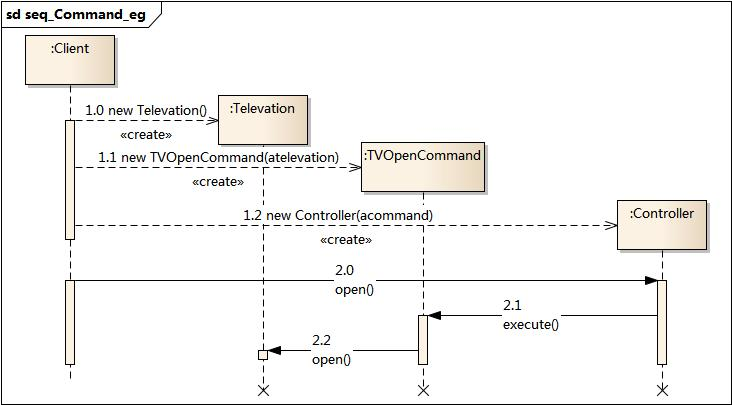

1. 命令模式¶
1.1. 模式动机¶
在软件设计中，我们经常需要向某些对象发送请求，但是并不知道请求的接收者是谁，也不知道被请求的操作是哪个，我们只需在程序运行时指定具体的请求接收者即可，此时，可以使用命令模式来进行设计，使得请求发送者与请求接收者消除彼此之间的耦合，让对象之间的调用关系更加灵活。
命令模式可以对发送者和接收者完全解耦，发送者与接收者之间没有直接引用关系，发送请求的对象只需要知道如何发送请求，而不必知道如何完成请求。这就是命令模式的模式动机。
1.2. 模式定义¶
命令模式(Command Pattern)：将一个请求封装为一个对象，从而使我们可用不同的请求对客户进行参数化；对请求排队或者记录请求日志，以及支持可撤销的操作。命令模式是一种对象行为型模式，其别名为动作(Action)模式或事务(Transaction)模式。
1.3. 模式结构¶
命令模式包含如下角色：
Command: 抽象命令类
ConcreteCommand: 具体命令类
Invoker: 调用者
Receiver: 接收者
Client:客户类

1.4. 时序图¶

1.5. 代码分析¶
1#include <iostream>
2#include "ConcreteCommand.h"
3#include "Invoker.h"
4#include "Receiver.h"
5
6using namespace std;
7
8int main(int argc, char *argv[])
9{
10 Receiver * pReceiver = new Receiver();
11 ConcreteCommand * pCommand = new ConcreteCommand(pReceiver);
12 Invoker * pInvoker = new Invoker(pCommand);
13 pInvoker->call();
14
15 delete pReceiver;
16 delete pCommand;
17 delete pInvoker;
18 return 0;
19}
1///////////////////////////////////////////////////////////
2// Receiver.h
3// Implementation of the Class Receiver
4// Created on: 07-十月-2014 17:44:02
5// Original author: colin
6///////////////////////////////////////////////////////////
7
8#if !defined(EA_8E5430BB_0904_4a7d_9A3B_7169586237C8__INCLUDED_)
9#define EA_8E5430BB_0904_4a7d_9A3B_7169586237C8__INCLUDED_
10
11class Receiver
12{
13
14public:
15 Receiver();
16 virtual ~Receiver();
17
18 void action();
19
20};
21#endif // !defined(EA_8E5430BB_0904_4a7d_9A3B_7169586237C8__INCLUDED_)
1///////////////////////////////////////////////////////////
2// Receiver.cpp
3// Implementation of the Class Receiver
4// Created on: 07-十月-2014 17:44:02
5// Original author: colin
6///////////////////////////////////////////////////////////
7
8#include "Receiver.h"
9#include <iostream>
10using namespace std;
11
12Receiver::Receiver(){
13
14}
15
16Receiver::~Receiver(){
17
18}
19
20void Receiver::action(){
21 cout << "receiver action." << endl;
22}
1///////////////////////////////////////////////////////////
2// ConcreteCommand.h
3// Implementation of the Class ConcreteCommand
4// Created on: 07-十月-2014 17:44:01
5// Original author: colin
6///////////////////////////////////////////////////////////
7
8#if !defined(EA_1AE70D53_4868_4e81_A1B8_1088DA355C23__INCLUDED_)
9#define EA_1AE70D53_4868_4e81_A1B8_1088DA355C23__INCLUDED_
10
11#include "Command.h"
12#include "Receiver.h"
13
14class ConcreteCommand : public Command
15{
16
17public:
18 ConcreteCommand(Receiver * pReceiver);
19 virtual ~ConcreteCommand();
20 virtual void execute();
21private:
22 Receiver *m_pReceiver;
23
24
25
26};
27#endif // !defined(EA_1AE70D53_4868_4e81_A1B8_1088DA355C23__INCLUDED_)
1///////////////////////////////////////////////////////////
2// ConcreteCommand.cpp
3// Implementation of the Class ConcreteCommand
4// Created on: 07-十月-2014 17:44:02
5// Original author: colin
6///////////////////////////////////////////////////////////
7
8#include "ConcreteCommand.h"
9#include <iostream>
10using namespace std;
11
12
13ConcreteCommand::ConcreteCommand(Receiver *pReceiver){
14 m_pReceiver = pReceiver;
15}
16
17
18
19ConcreteCommand::~ConcreteCommand(){
20
21}
22
23void ConcreteCommand::execute(){
24 cout << "ConcreteCommand::execute" << endl;
25 m_pReceiver->action();
26}
1///////////////////////////////////////////////////////////
2// Invoker.h
3// Implementation of the Class Invoker
4// Created on: 07-十月-2014 17:44:02
5// Original author: colin
6///////////////////////////////////////////////////////////
7
8#if !defined(EA_3DACB62A_0813_4d11_8A82_10BF1FB00D9A__INCLUDED_)
9#define EA_3DACB62A_0813_4d11_8A82_10BF1FB00D9A__INCLUDED_
10
11#include "Command.h"
12
13class Invoker
14{
15
16public:
17 Invoker(Command * pCommand);
18 virtual ~Invoker();
19 void call();
20
21private:
22 Command *m_pCommand;
23
24
25};
26#endif // !defined(EA_3DACB62A_0813_4d11_8A82_10BF1FB00D9A__INCLUDED_)
1///////////////////////////////////////////////////////////
2// Invoker.cpp
3// Implementation of the Class Invoker
4// Created on: 07-十月-2014 17:44:02
5// Original author: colin
6///////////////////////////////////////////////////////////
7
8#include "Invoker.h"
9#include <iostream>
10using namespace std;
11
12Invoker::Invoker(Command * pCommand){
13 m_pCommand = pCommand;
14}
15
16Invoker::~Invoker(){
17
18}
19
20void Invoker::call(){
21 cout << "invoker calling" << endl;
22 m_pCommand->execute();
23}
运行结果：

1.6. 模式分析¶
命令模式的本质是对命令进行封装，将发出命令的责任和执行命令的责任分割开。
每一个命令都是一个操作：请求的一方发出请求，要求执行一个操作；接收的一方收到请求，并执行操作。
命令模式允许请求的一方和接收的一方独立开来，使得请求的一方不必知道接收请求的一方的接口，更不必知道请求是怎么被接收，以及操作是否被执行、何时被执行，以及是怎么被执行的。
命令模式使请求本身成为一个对象，这个对象和其他对象一样可以被存储和传递。
命令模式的关键在于引入了抽象命令接口，且发送者针对抽象命令接口编程，只有实现了抽象命令接口的具体命令才能与接收者相关联。
1.7. 实例¶
实例一：电视机遥控器
电视机是请求的接收者，遥控器是请求的发送者，遥控器上有一些按钮，不同的按钮对应电视机的不同操作。抽象命令角色由一个命令接口来扮演，有三个具体的命令类实现了抽象命令接口，这三个具体命令类分别代表三种操作：打开电视机、关闭电视机和切换频道。显然，电视机遥控器就是一个典型的命令模式应用实例。

时序图:
1.8. 优点¶
命令模式的优点
降低系统的耦合度。
新的命令可以很容易地加入到系统中。
可以比较容易地设计一个命令队列和宏命令（组合命令）。
可以方便地实现对请求的Undo和Redo。
1.9. 缺点¶
命令模式的缺点
使用命令模式可能会导致某些系统有过多的具体命令类。因为针对每一个命令都需要设计一个具体命令类，因此某些系统可能需要大量具体命令类，这将影响命令模式的使用。
1.10. 适用环境¶
在以下情况下可以使用命令模式：
系统需要将请求调用者和请求接收者解耦，使得调用者和接收者不直接交互。
系统需要在不同的时间指定请求、将请求排队和执行请求。
系统需要支持命令的撤销(Undo)操作和恢复(Redo)操作。
系统需要将一组操作组合在一起，即支持宏命令
1.11. 模式应用¶
很多系统都提供了宏命令功能，如UNIX平台下的Shell编程，可以将多条命令封装在一个命令对象中，只需要一条简单的命令即可执行一个命令序列，这也是命令模式的应用实例之一。
1.12. 模式扩展¶
宏命令又称为组合命令，它是命令模式和组合模式联用的产物。
-宏命令也是一个具体命令，不过它包含了对其他命令对象的引用，在调用宏命令的execute()方法时，将递归调用它所包含的每个成员命令的execute()方法，一个宏命令的成员对象可以是简单命令，还可以继续是宏命令。执行一个宏命令将执行多个具体命令，从而实现对命令的批处理。
1.13. 总结¶
在命令模式中，将一个请求封装为一个对象，从而使我们可用不同的请求对客户进行参数化；对请求排队或者记录请求日志，以及支持可撤销的操作。命令模式是一种对象行为型模式，其别名为动作模式或事务模式。
命令模式包含四个角色：抽象命令类中声明了用于执行请求的execute()等方法，通过这些方法可以调用请求接收者的相关操作；具体命令类是抽象命令类的子类，实现了在抽象命令类中声明的方法，它对应具体的接收者对象，将接收者对象的动作绑定其中；调用者即请求的发送者，又称为请求者，它通过命令对象来执行请求；接收者执行与请求相关的操作，它具体实现对请求的业务处理。
命令模式的本质是对命令进行封装，将发出命令的责任和执行命令的责任分割开。命令模式使请求本身成为一个对象，这个对象和其他对象一样可以被存储和传递。
命令模式的主要优点在于降低系统的耦合度，增加新的命令很方便，而且可以比较容易地设计一个命令队列和宏命令，并方便地实现对请求的撤销和恢复；其主要缺点在于可能会导致某些系统有过多的具体命令类。
命令模式适用情况包括：需要将请求调用者和请求接收者解耦，使得调用者和接收者不直接交互；需要在不同的时间指定请求、将请求排队和执行请求；需要支持命令的撤销操作和恢复操作，需要将一组操作组合在一起，即支持宏命令。